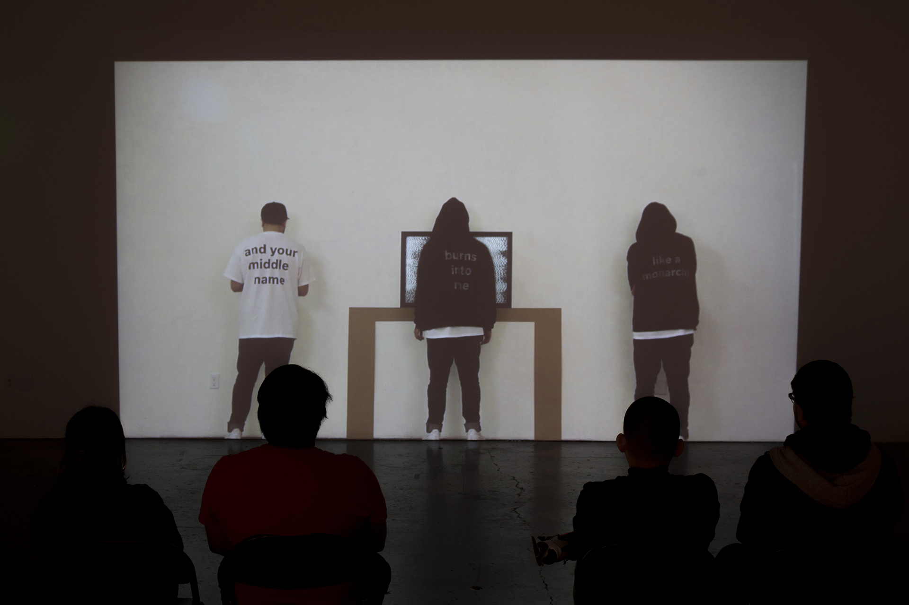

I CARVE TIME LIKE A JACK-O-LANTERN
Video Projection/ Installation
I Carve Time Like a Jack-O-Lantern was a video projection/installation that explored the idea of the inability to break from our old habits. We can sometimes be stuck in a loop and not even notice it. When we finally do start to notice we don’t have the power to break from the routine. The video features a character that is aware of this but lacks the power to break the cycle.
Full Video of I Carve Time Like a Jack-O-Lantern Installation
THE FULL TEXT
I carve time like a Jack-O-Lantern. I facilitate the sloppy execution of emergency procedures. I go home after work. Evening is no longer reserved for reflection because things have been divorced from their purposes. Example: butter-knife in the toaster. Yet water remains an efficient mode of transportation. Example: planned expansion of the Panama Canal. Example: sorrow. I pin my blindfolded loyalty to you like a tail. I’m unsure what’s dizzying, but it’s dizzying. I smell like wanting a why when there is none, and your middle name burns into me like a monarchy. I will continue this song. I will continue at least until the we -I’ll only ever loosely identify with returns from commercial break. The deeper issue, you see, is that I cannot find the remote.
PROCESS
This installation was made within CCA, in a class called Experimentation, instructed by designer, Jeremy Mende. The brief was to interpret and use a given text into an installation. To me, the text I was given seemed like it was about feeling stuck and not having the power to get unstuck. In brainstorming multiple forms I decided to create a video that would showcase a character wondering from in and out of the video. I displayed the text on the character and around them to act as their thoughts.
×